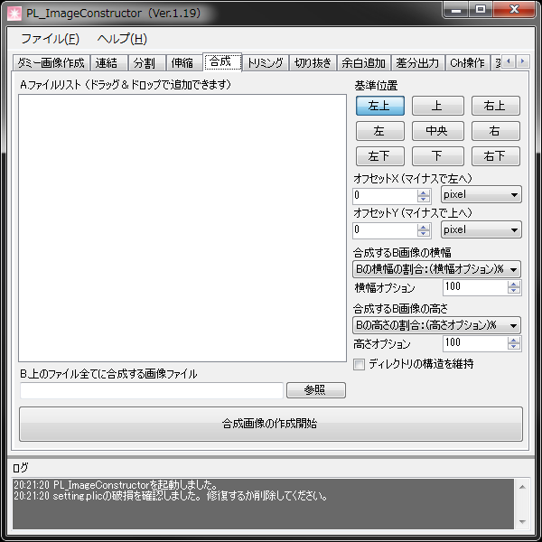

画像データに別の画像を合成します。
画像にコピーライトやブランドロゴ、「画面は開発中のものです」などを一括で追加したい時などに便利です。
- B.上のファイル全てに合成する画像ファイル
合成したい画像ファイルのパスを指定します。
使用できるファイルフォーマットは、jpg(jpeg),png,bmpのいずれかになります。
便宜上このファイルを「B画像」あるいは「B」と呼びます。
- 基準位置
B画像の貼り付け位置を指定します。
- オフセット
B画像の貼り付け位置をズラすことができます。
％指定時は、A画像の縦幅や横幅の割合になります。
- 合成するB画像の横幅・縦幅
B画像の貼り付けサイズを指定します。
そのままのサイズで貼り付けたい場合は、「B画像の割合：（オプション）％」にして、オプションを100に指定します。
また、
- ディレクトリの構造を維持
登録されたファイルのフォルダ構成再現して出力します。